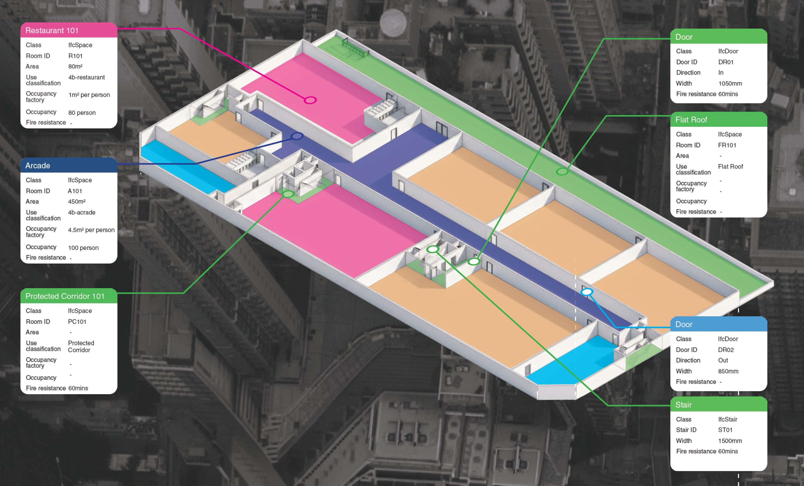

The FireCheck 4D is digital powerhouse which ensures every building project can achieve the "3-Certainty" in design, construction, and life-cycle.
IFC Data Schema
Data schema and parameter setting make space, use, evacuation sequence, building elements and construction machine-readable. Our unique data structure successfully extracts essential data from BIM model for automated computation and analysis.

Evacuation Sequence Analysis
Evacuation sequence analysis is inherently complex, as building escape routes form a matrix of possible scenarios. By extracting the egress direction of each opening between consecutive spaces, an 'in-out' logic is established.
This logic links all spaces along the evacuation path within the BIM model, enabling automated determination of people flow sequences. Such analysis is critical for evaluating travel distances, cumulative population in each space, and the required width and number of escape routes or staircases.
Space to Space Approach
Hong Kong Fire Safety Code stipulates that the width of each exit route, as well as the combined width of all exit routes, must be determined based on occupancy capacity and the number of exits provided. The 'in-out' logic supports this process by computing the possible maximum population in each individual space, ensuring that exit widths are sufficient for safe evacuation.
Travel Distance Assessment
Unlike paper submission which relies on manual judgment and measurement of travel distances, we have adopted various geometrical principles and developed our own pathfinding algorithms to automate the travel distance assessment.
Fire Resisting Construction
In Hong Kong, every building should be divided into fire compartments by fire barriers to inhibit the spread of fire. By extracting compartment information and building element data, the integrity and continuity of these fire separations will be automatically assessed.
Firefighting and Rescue
By delineating emergency vehicular access in the BIM model, spatial analysis will be conducted to ensure the envelope of the building is adequately served by fire appliance.
Image/GIF: access routes, fire appliance symbols, aerial view